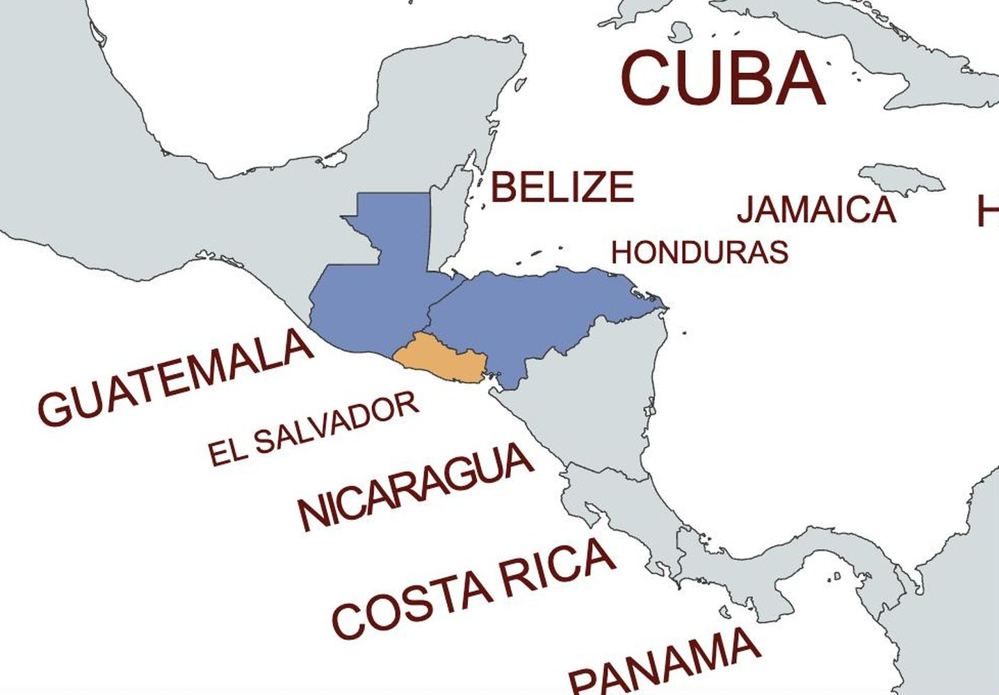
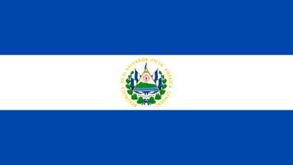
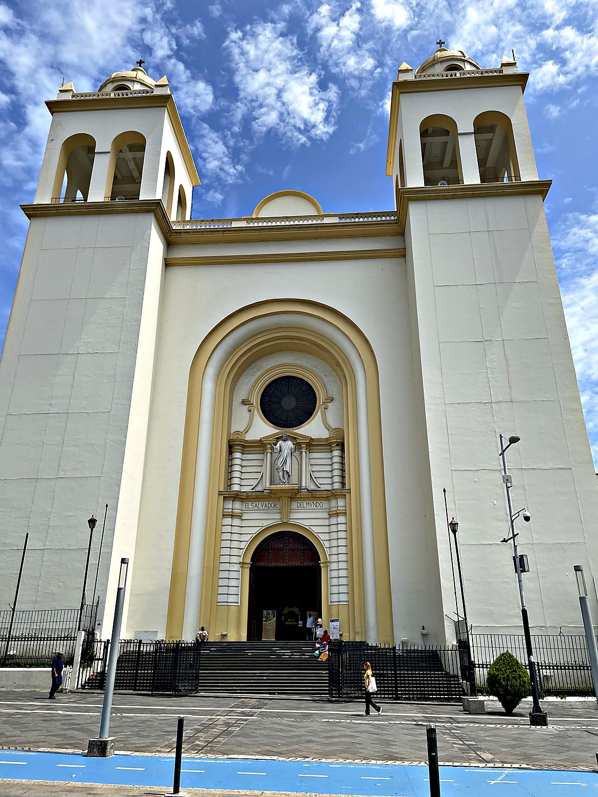
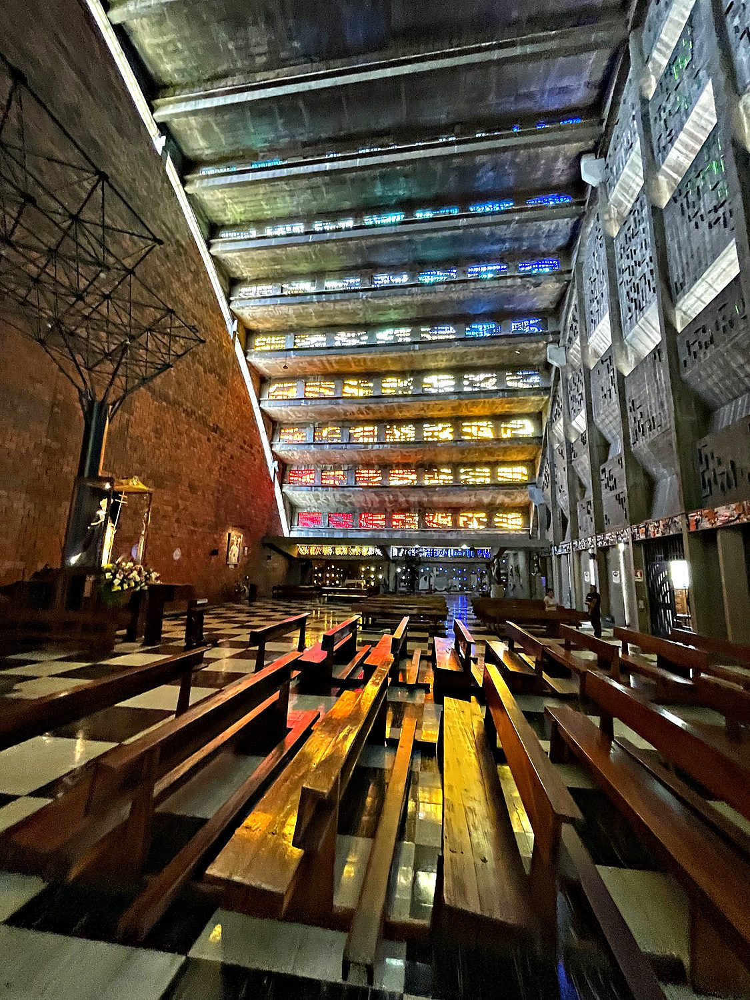
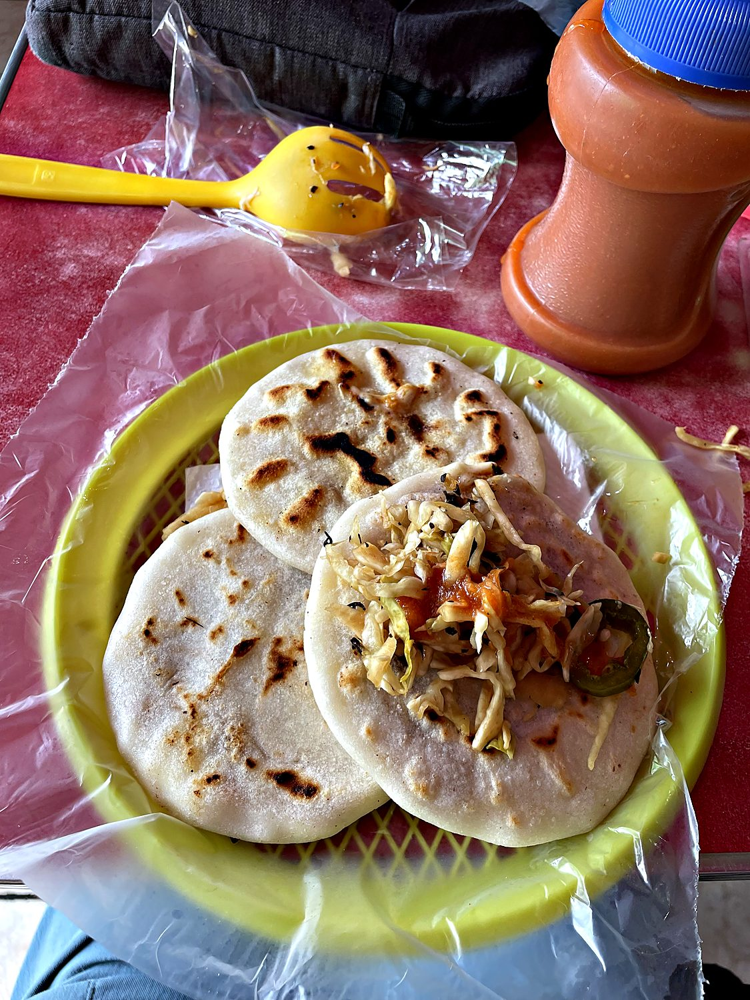

I visited El Salvador in September 2025 on a whirlwind day trip with my friend Allen, having slept almost not at all the night before. Airport security was rigorous but efficient, and we got through surprisingly fast. We took a communal bus into the centre of San Salvador and simply walked the city, taking in the national library, the government palace, the central square, and the astonishing Rosario church. Brunch was pupusas, the national dish, and they were as good as advertised. We then cabbed up to the crater of the El Boquerón volcano, where the cool forest air did wonders for my sleep-deprived brain. On the way back a downpour caught us. Allen took a slip and let out a mighty, indignant, and sleep-deprived squawk at the indignity of getting wet. I do not intend to let him forget it.
San Salvador, the capital, sprawls across a valley beneath the volcano that looms over it. That setting is fitting, because El Salvador is the "Land of Volcanoes," a small and intensely geological country stitched from some two dozen of them. It is the smallest nation in Central America and the most densely populated. It is also the only one with no Caribbean coast at all, facing solely the Pacific. The land has trembled and erupted throughout its history, and the capital has been levelled by earthquakes on numerous occasions, with the worst occurring in 1917, 1986, and 2001. It is a country that has learned to rebuild.

Before the Spanish arrived, this was the land of the Pipil, a people related to the Aztecs who called their domain Cuzcatlán. Colonization folded it into the Spanish empire, and independence in 1821 folded it into a series of larger experiments: first the Mexican Empire, then the Federal Republic of Central America, before El Salvador finally stood alone in 1841. The economy that emerged was built on coffee, and coffee was controlled by a tiny landholding elite often remembered as the "Fourteen Families." Beneath that wealth simmered deep inequality. In 1932 a peasant and indigenous uprising was crushed in a massacre known as La Matanza, in which tens of thousands were killed, a wound that shadowed the century to come.

That inequality eventually erupted into a brutal civil war from 1980 to 1992, fought between a US-backed government and leftist FMLN guerrillas, which killed around 75,000 people before the Chapultepec Peace Accords ended it. The decades since brought a new plague of violence in the form of the street gangs, followed by an equally dramatic response. The government of Nayib Bukele imposed a sweeping crackdown that jailed tens of thousands and drove the homicide rate from one of the worst in the world down to among the lowest in the hemisphere. Supporters call it a miracle of public safety, while critics point to mass arrests carried out with little due process and serious human-rights concerns. Walking the streets, I found the city calm and unthreatening, which made the debate feel very real. The national flag flying over it all is a simple band of blue, white, and blue, carrying a coat of arms and the motto "Dios, Unión, Libertad” (“God, Union, Liberty”).
The Metropolitan Cathedral on the main square is the spiritual heart of the nation, and it holds the tomb of the man who has come to embody modern El Salvador's conscience. Archbishop Óscar Romero was a fierce advocate for the poor during the descent into civil war. In 1980 he was assassinated by a death squad while saying Mass, and days later gunfire tore through the crowd of mourners at his funeral in this very plaza. The Catholic Church declared him a saint in 2018. His crypt beneath the cathedral remains a place of pilgrimage, and his memory hangs over the country's politics to this day.

From the outside, the Iglesia El Rosario looks like a grey concrete aircraft hangar, and most visitors walk straight past it. This is one of the great architectural jokes in the Americas, because the inside is breathtaking. The church was completed in 1971 as a single sweeping arch of raw concrete, and its walls are set with vast panels of coloured glass. When the sun crosses them, the whole interior floods with rainbows that pour across the pews and the bare floor. It may be the most beautiful church I have ever stepped into, and almost nobody expects it.

No account of El Salvador is complete without its national obsession, the pupusa. It is a thick, hand-patted corn tortilla stuffed with some combination of cheese, refried beans, and chicharrón, griddled until golden, and served with a tangy cabbage slaw called curtido and a thin tomato salsa. The dish descends from the Pipil and has become such a point of national pride that the country celebrates a National Pupusa Day. Allen and I devoured a plate of them for brunch, and I can confirm that they are the ideal fuel for wandering a capital city on zero sleep.
